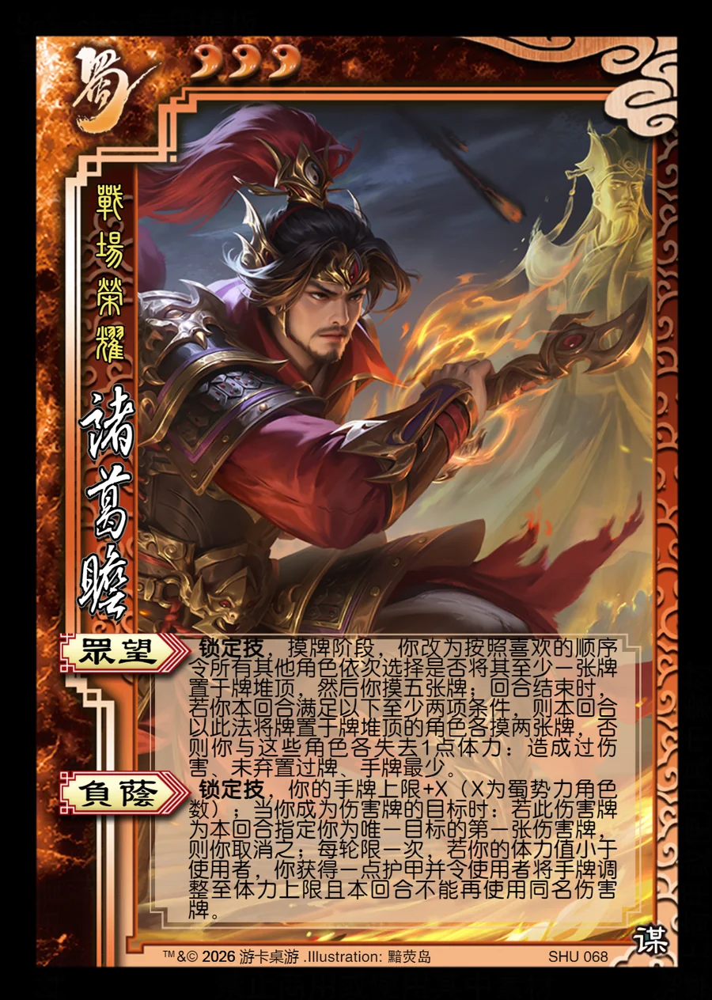

点击卡面查看大图
蜀
诸葛瞻
♥3战场荣耀
众望锁定技
锁定技，摸牌阶段，你改为按照喜欢的顺序令所有其他角色依次选择是否将其至少一张牌置于牌堆顶，然后你摸五张牌；回合结束时，若你本回合满足以下至少两项条件，则本回合以此法将牌置于牌堆顶的角色各摸两张牌，否则你与这些角色各失去1点体力：造成过伤害、未弃置过牌、手牌最少。
负荫锁定技
锁定技，你的手牌上限+X（X为蜀势力角色数）；当你成为伤害牌的目标时：若此伤害牌为本回合指定你为唯一目标的第一张伤害牌，则你取消之；每轮限一次，若你的体力值小于使用者，你获得一点护甲并令使用者将手牌调整至体力上限且本回合不能再使用同名伤害牌。